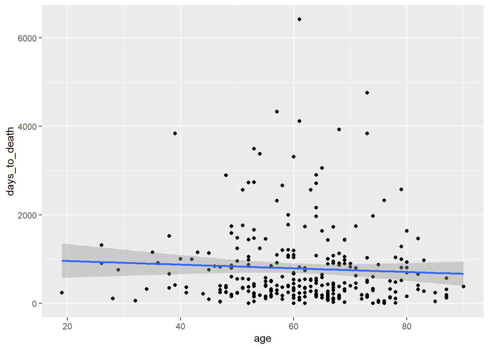

Eigenschaften von Tibbles über klassische Dataframes hinaus
<chr>.hnscc %>%
filter(age<50, tabacco_group=="Lifelong Non-smoker") %>%
arrange(age)## # A tibble: 18 x 11
## id age alcohol days_to_death gender neoplasm_site grade pack_years
## <chr> <int> <chr> <int> <chr> <chr> <chr> <dbl>
## 1 TCGA~ 19 NO 240 MALE Oral Tongue G2 NA
## 2 TCGA~ 26 YES 908 MALE Oral Tongue G2 NA
## 3 TCGA~ 26 YES 1315 MALE Oral Tongue G2 NA
## 4 TCGA~ 29 <NA> 761 FEMALE Oral Tongue GX NA
## 5 TCGA~ 32 YES 64 FEMALE Oral Tongue G2 NA
## 6 TCGA~ 35 YES 1152 FEMALE Tonsil GX NA
## 7 TCGA~ 38 YES 1521 MALE Tonsil G2 NA
## 8 TCGA~ 39 NO 3836 MALE Oral Cavity G2 NA
## 9 TCGA~ 40 NO 1006 MALE Oral Tongue G2 NA
## 10 TCGA~ 41 YES 242 FEMALE Oral Tongue G2 NA
## 11 TCGA~ 43 NO 1149 FEMALE Oral Tongue G2 NA
## 12 TCGA~ 45 YES 759 MALE Oral Tongue G1 NA
## 13 TCGA~ 46 NO 841 FEMALE Oral Tongue G2 NA
## 14 TCGA~ 47 YES 311 MALE Tonsil G2 NA
## 15 TCGA~ 48 NO 2891 MALE Tonsil G3 NA
## 16 TCGA~ 48 YES 255 MALE Oral Tongue G2 NA
## 17 TCGA~ 49 YES 796 MALE Oral Tongue G2 NA
## 18 TCGA~ 49 NO 160 MALE Oropharynx G3 NA
## # ... with 3 more variables: tabacco_group <chr>, tumor_stage <chr>,
## # vital_status <chr>hnscc %>%
select(age,grade) %>%
rename(Alter=age,Grading=grade)hnscc <- hnscc %>%
mutate(is_young=(age<50))
table(hnscc$is_young)##
## FALSE TRUE
## 237 42hnscc %>%
group_by(grade) %>%
summarise(median_OS = median(days_to_death, na.rm=TRUE))## `summarise()` ungrouping output (override with `.groups` argument)## # A tibble: 5 x 2
## grade median_OS
## <chr> <dbl>
## 1 G1 913
## 2 G2 395
## 3 G3 444
## 4 G4 360
## 5 GX 715ggplot(hnscc, aes(x=age, y=days_to_death, color=neoplasm_site, shape=grade)) +
geom_point() +
facet_wrap(~alcohol)## Warning: Removed 1 rows containing missing values (geom_point).coord_flip?hnscc %>%
group_by(neoplasm_site) %>%
summarize(mean_age=mean(age)) %>%
ggplot(aes(x=reorder(neoplasm_site,mean_age),y=mean_age)) +
geom_bar(stat="identity") +
coord_flip() +
xlab("anatomical site") +
ylab("mean age")In diesem Codebespiel wurde die Transformation mit der Pipefunktion %>% mit dem Plotten verzahnt. Kontraintuitiv ist, dass die Transformation mit einer Pipefunktion und das Plotten mit einem + verbunden ist. coord_flip() dreht die Achsen um, was die Kategorien besser leserlich macht. Zudem wurde die Reihenfolge der anatomischen Region mit reorder nach mittlerem Alter geordnet.
ggplot(hnscc, aes(x=age, y=days_to_death)) +
geom_point() +
geom_smooth(method="lm")## `geom_smooth()` using formula 'y ~ x'## Warning: Removed 1 rows containing non-finite values (stat_smooth).## Warning: Removed 1 rows containing missing values (geom_point).